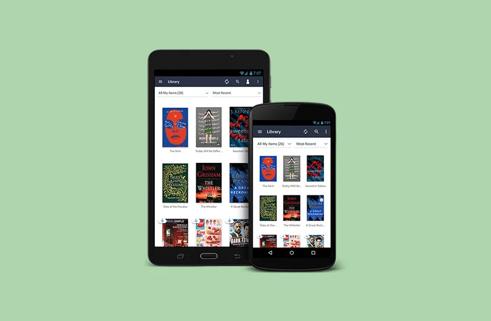
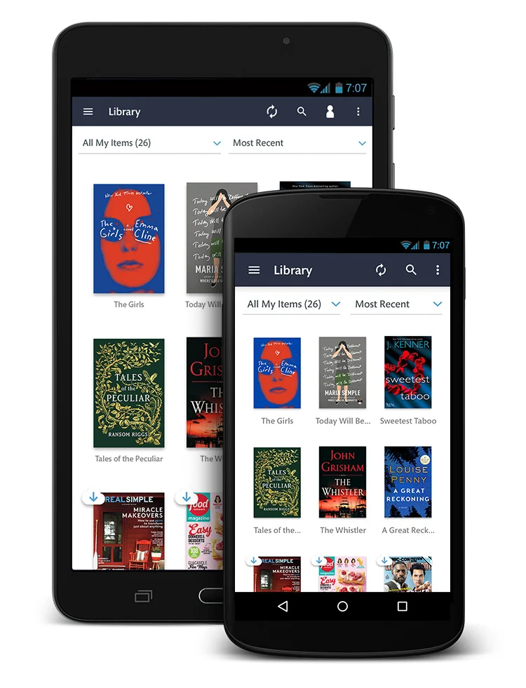
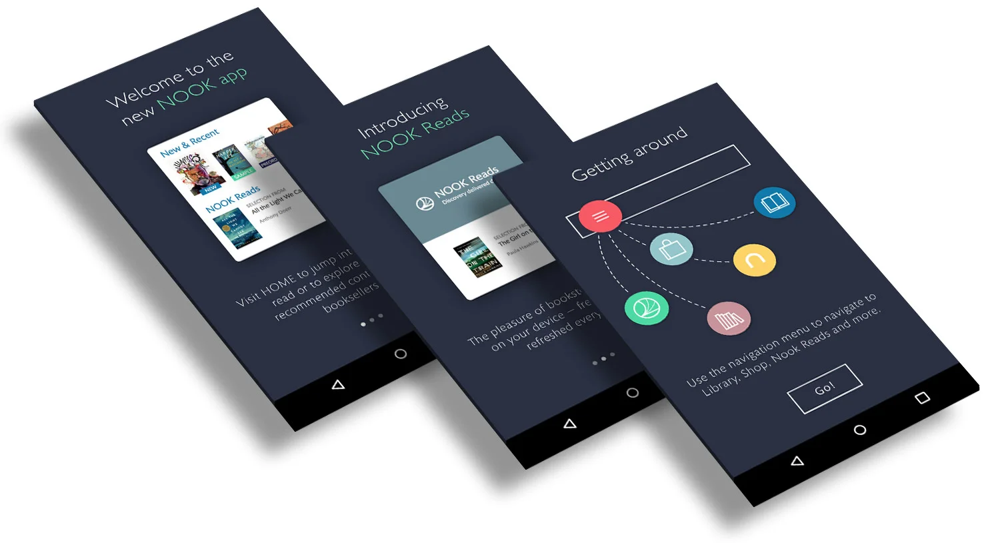
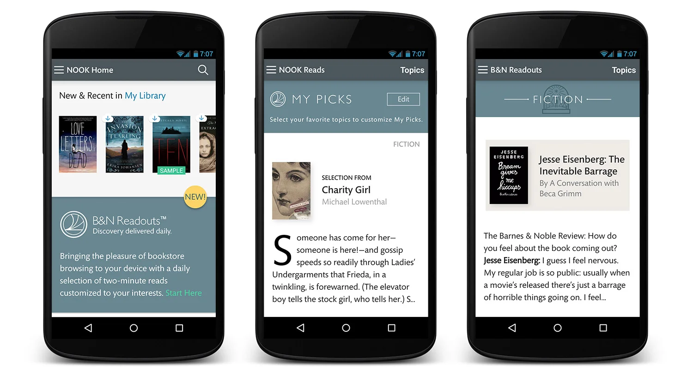
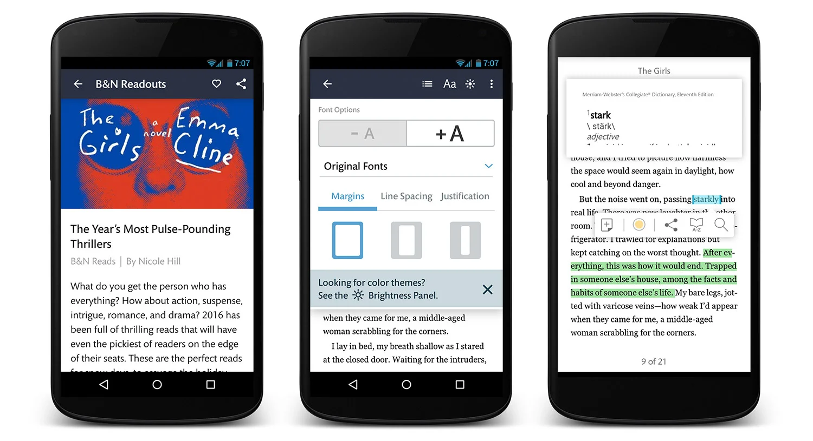

NOOK Reading App
Library browsing, onboarding, and the in-book reading experience for the NOOK app.
- Client
- Barnes & Noble / NOOK
- Role
- UX strategy & UI design

Library
The NOOK app library grid of books and magazines on tablet and phone.

Onboarding
Welcome, NOOK Reads introduction, and navigation screens for first-time app users.

Reading
The home feed, NOOK Reads picks, and in-book font and dictionary tools.

